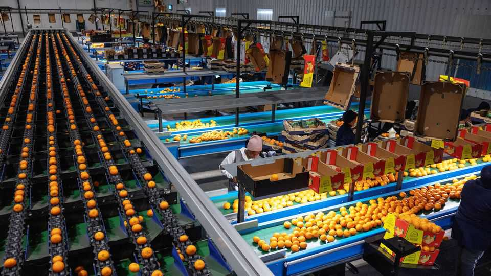
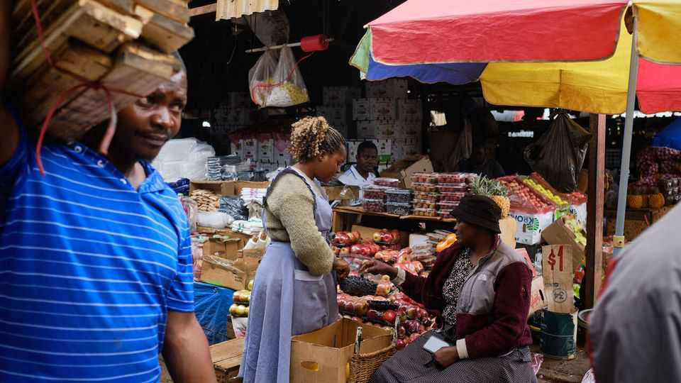
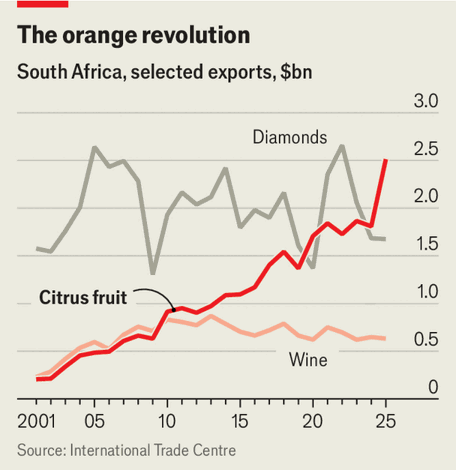
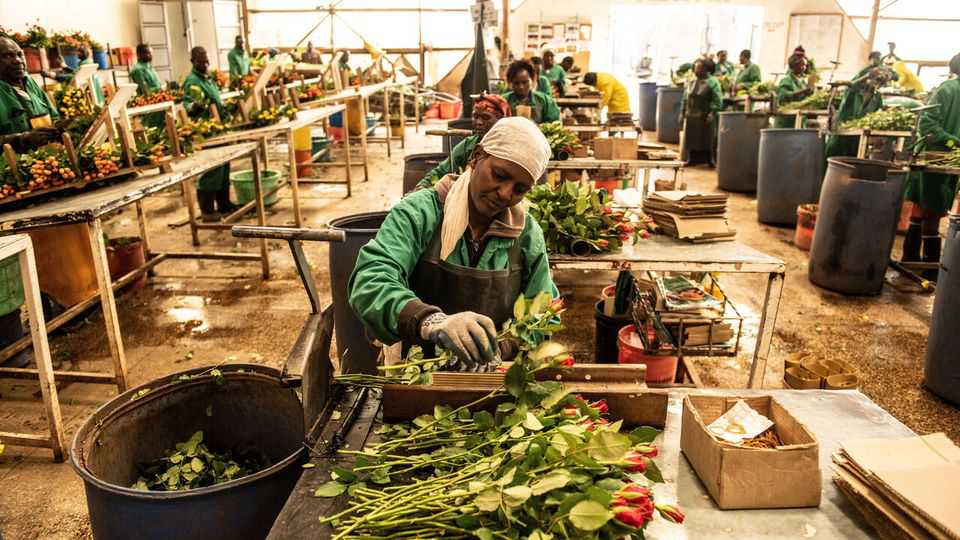

Forget gold and copper. Africa’s latest boom is in fruit
A surge in fruit exports shows how high-value agriculture can spur industrialisation

Aug 6th 2026
“IT’S A HIVE of activity,” says Alistair Campbell, observing the scene at his blueberry farm 40km outside Harare, the capital of Zimbabwe. Hundreds of workers pick the fruit from the bushes, before carrying the bounty to a cold-storage facility. After sorting, the berries are flown to east Asia, where demand is high for the largest globules, or shipped to Europe. “We’re flat out,” says Mr Campbell, who used to captain Zimbabwe’s cricket team. “We could sell our crop five or six times over.”
For once the colour associated with a boom in Zimbabwe is blue, not gold. This year Zimbabwean growers expect to export 12,000 tonnes of blueberries, 40 times more than in 2017. “Every man and his dog is planting blueberries,” says one of the country’s most prominent bankers.
The tiny fruit contains a bigger lesson. Manufacturing has struggled in sub-Saharan Africa: its share of output has been more or less flat for 15 years. That worries analysts who think African growth depends on Asian-style, export-oriented factories. Yet high-tech farms are in effect mini-factories, labour-intensive and linked to global supply chains. This “industrialisation of freshness”, in the words of Christopher Cramer, an academic, could be a boon for Africa—and force a rethink of what is meant by farming and manufacturing.
Africa’s economic history has left policymakers with an ambivalent view of agricultural exports. Under colonial rule many countries exported just a single crop, a model that remained after independence. From 1966 to 1973 almost half of sub-Saharan African countries earned half their export revenues from a single commodity. When prices plummeted, economies crashed. That helps explain why many governments diverted resources from farms to half-baked industrial schemes.

But in recent years African agribusinesses have responded to rising global incomes—and demand for fresh produce. The Africa Agriculture Trade Monitor, an annual report, notes that over the most recent decade for which it has data, “fruits and nuts” became the continent’s largest agricultural export, overtaking cocoa. The shares of traditional cash crops like cocoa, cotton, tobacco and sugar all fell.
Africa still lags behind Latin America, which exports four times as much in agricultural goods (an average of $341bn per year in 2019-23 compared with Africa’s $81bn). Peru, which barely exported blueberries in 2010, was the world’s largest exporter a decade later. But if Africa can learn from such success stories, there will be fruitful returns.
“Blueberries are a great example of agriculture as high-tech industry,” argues Daniel Hulls, the boss of AgDevCo, an investment fund. Driscoll’s, an American agribusiness giant, supplies seeds to farmers in Zimbabwe that are the result of years of cross-pollination. Polyethylene covers protect bushes. Storage rooms have optical sorting machines. To maximise profits, firms time production for the summer, after American supply dwindles but before Peru’s picks up.
Blueberries are not the only example of Africa’s “industrialisation of fresh”. Today Kenya and Ethiopia account for 6% and 2% of global cut-flower exports. Their farms feature machines that spray fine mist, purify water by reverse osmosis and point radium bulbs at petals to prettify them.
Africa’s exports of tropical fruits, such as avocados, mangoes and pineapples, have more than tripled over the past decade, a faster growth rate than in any other region, according to the Food and Agriculture Organisation, a UN agency. Last year Europe consumed more than 1m tonnes (roughly the weight of ten aircraft carriers) of avocados for the first time. Much of its demand was met by Morocco and Kenya.

In May, for the first time, South Africa replaced Spain as the world’s largest exporter of citrus fruit. Since overtaking wine in 2010, citrus has been the country’s most valuable agricultural export, and recently has earned it more than it gains through diamond exports (see chart). The success can be traced back to 1997 and the abolition of state-run marketing boards. Before then the government divided export revenues among farmers; thereafter each farmer kept their own profits and had more incentive to invest in their fruit. Industry experts also stress the role of the Citrus Growers Association (CGA), which takes levies from farmers to carry out research, lobby for better policies and disseminate know-how.
The special benefits some economists ascribe to manufacturing seem to apply to tech-savvy farms. Their exports boost trade balances. They employ hundreds of people. They help create other products and firms along supply chains. “These are integrated manufacturing and logistics businesses,” says Wandile Sihlobo, a South African agricultural economist.

Jane Maina, the boss of Vert, a tropical-fruit firm in Kenya, says she has moved into exporting dried snacks. The new range means fewer mangoes and pineapples sourced from smallholders are wasted, raising farmers’ productivity. The cold-storage facilities built at east African airports for the flower business are now used by exporters of herbs, beans and vegetables. The blueberry rush in Zimbabwe has led to new “agritech” apps monitoring weather conditions and yields. In South Africa the citrus boom has produced several spin-off research firms.
Sadly, bad roads and clogged ports still make it hard to deliver perfect fruit. African farmers, like many elsewhere, complain about inadequate political support. Some have a point. When Ethiopia’s flower business started, the government at the time provided armed guards for airport-bound lorries. Now exporters complain of being stopped by armed bandits.
The good news is that potential markets are opening. In May China stopped applying tariffs to most African imports. In July the first punnets of blueberries from Zimbabwe were sent there. Yet non-tariff barriers, such as food-safety and plant-health regulations, often prove trickiest. Managing them needs concerted diplomacy and dedicated industry bodies, such as South Africa’s CGA.
The success of Zimbabwean blueberries, Kenyan flowers and South African oranges suggests there is huge potential for African agriculture to play the sort of role long envisioned for manufacturing. But to maximise the fruits of their labours African policymakers will need to help ensure that their firms are globally competitive. Time for fresh thinking. ■
Sign up to the Analysing Africa, a weekly newsletter that keeps you in the loop about the world’s youngest—and least understood—continent.